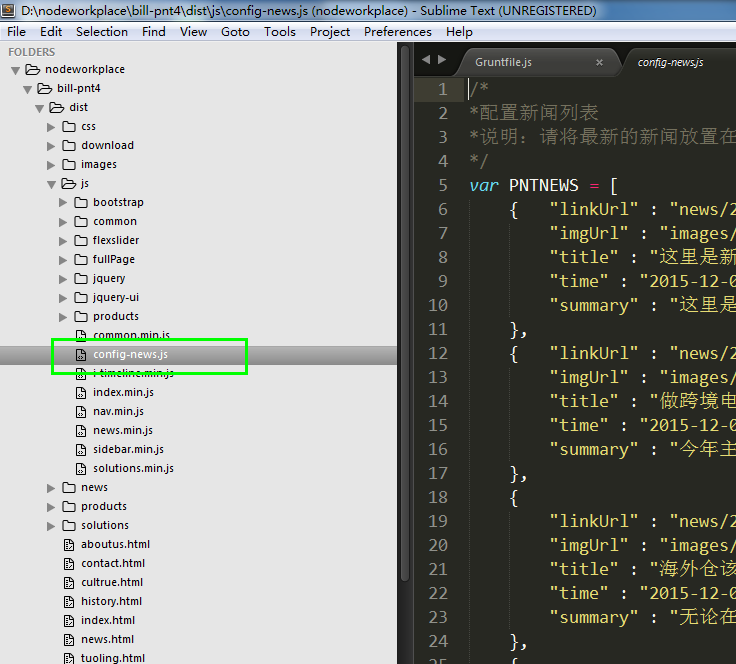
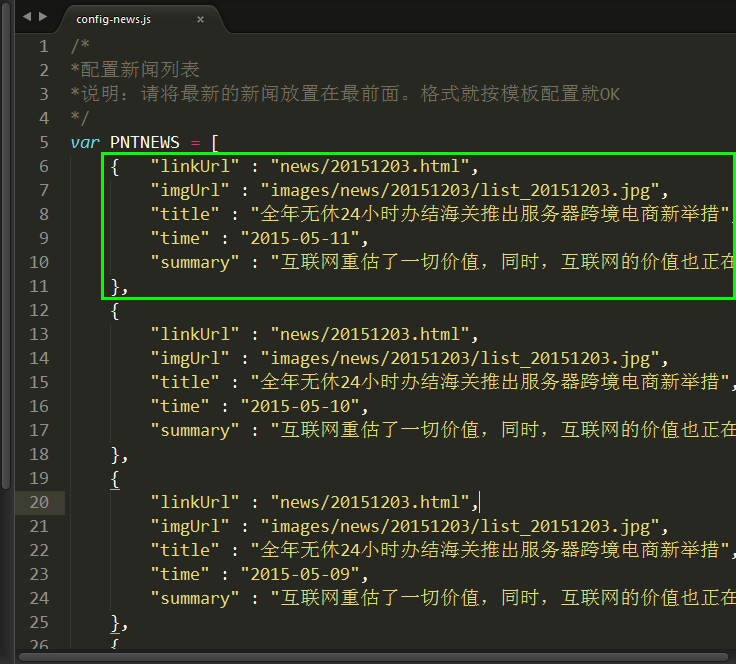
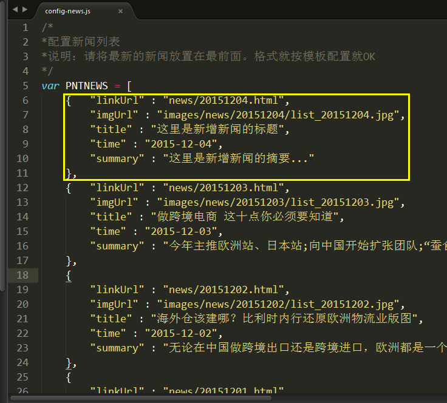

1、首先应完成将要新增的新闻单页
新增方法：复制一个已经完成的新闻单页，例如20151203.html；然后修改图片和文字，重命名后保存到新闻目录下即可。此步骤需要有html基础的同学完成较好！
2、修改js配置文件
找到JS目录下的config-news.js文件，如下图：

复制绿色框内的代码。如下图：

在绿色框前粘贴，例如，要新增一个20151204的新闻，黄色框是新增的代码，如下图。其中：linkUrl指新闻的链接路径，imgUrl指新闻列表前的小图片，title指新闻标题，time指新闻时间，summary指新闻的摘要。保存后替换原来的config-news.js即可。刷新页面就可以在首页和新闻列表页看到新增的新闻了。

有问题请咨询QQ:138009949